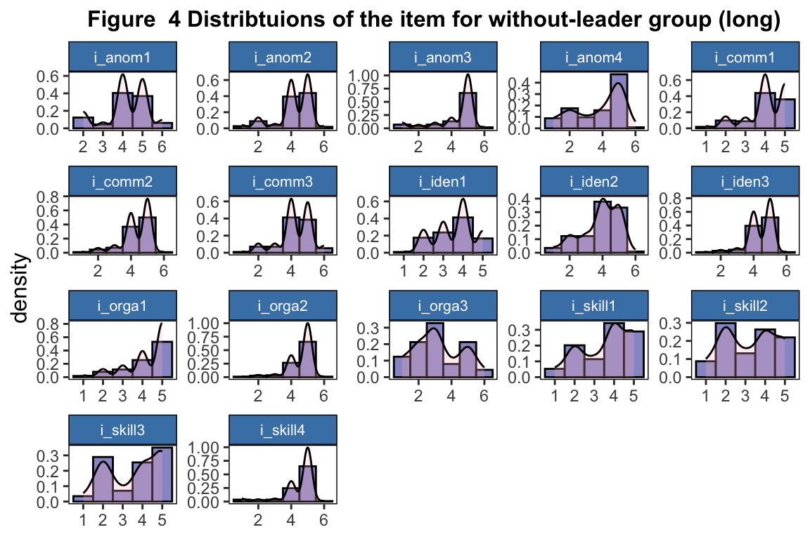

- 1 Data Wrangling
- 1.1 Read in the data
- 1.2 Combine 2022 and 2023 data
- 1.3 Reomove cases
- 1.4 Replace value of -99 with NA
- 1.5 Unify value labels
- 1.6 Relabel variables
- 1.7 Replace “Don’t know” with NAs
- 1.8 Create data sets
- 1.8.1 Create with-leader and without-leader data-sets
- 1.8.2 Remove cases with 50% NAs across major questions for each data sets
- 1.8.3 Create data set: 17 item without leader
- 1.8.4 Create data set: 5 item without leader
- 1.8.5 Create data set: 20 item with leader
- 1.8.6 Create data set: 6 item with leader
- 2 Descriptive statistics
- 3 Visualization
- 4 Impute NAs
- 5 Factor analysis for with-leader group (long)
- 6 Factor analysis for with-leader group (short)
- 7 Factor analysis for without-leader group (short)
5.2 Explore number of factors

## Parallel analysis suggests that the number of factors = 3 and the number of components = NA
##
## Number of factors
## Call: vss(x = x, n = n, rotate = rotate, diagonal = diagonal, fm = fm,
## n.obs = n.obs, plot = FALSE, title = title, use = use, cor = cor)
## VSS complexity 1 achieves a maximimum of 0.52 with 2 factors
## VSS complexity 2 achieves a maximimum of 0.68 with 5 factors
## The Velicer MAP achieves a minimum of 0.02 with 3 factors
## Empirical BIC achieves a minimum of -435.96 with 3 factors
## Sample Size adjusted BIC achieves a minimum of -21.06 with 5 factors
##
## Statistics by number of factors
## vss1 vss2 map dof chisq prob sqresid fit RMSEA BIC SABIC complex
## 1 0.46 0.00 0.027 170 391 2.0e-19 20.1 0.46 0.113 -394 143 1.0
## 2 0.52 0.58 0.029 151 284 3.5e-10 15.7 0.58 0.093 -413 64 1.3
## 3 0.51 0.67 0.024 133 179 5.0e-03 11.2 0.70 0.058 -435 -15 1.6
## 4 0.51 0.66 0.029 116 151 1.6e-02 9.7 0.74 0.054 -385 -18 1.7
## 5 0.47 0.68 0.031 100 125 4.8e-02 8.6 0.77 0.048 -337 -21 1.8
## eChisq SRMR eCRMS eBIC
## 1 613 0.126 0.134 -171
## 2 398 0.102 0.114 -299
## 3 178 0.068 0.081 -436
## 4 133 0.059 0.075 -402
## 5 106 0.053 0.072 -356